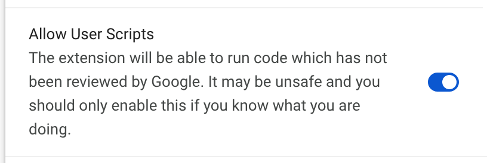

Turn on one switch
This change adds a button or a feature. Chrome needs you to allow that once.

Morse brings you back when it's on.
This change adds a button or a feature. Chrome needs you to allow that once.

Morse brings you back when it's on.